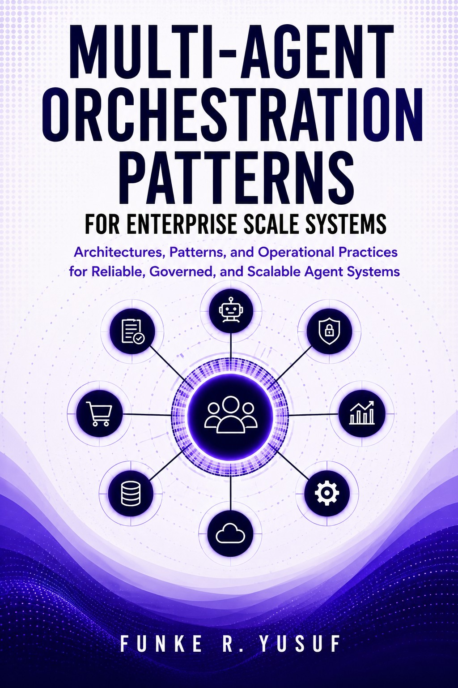
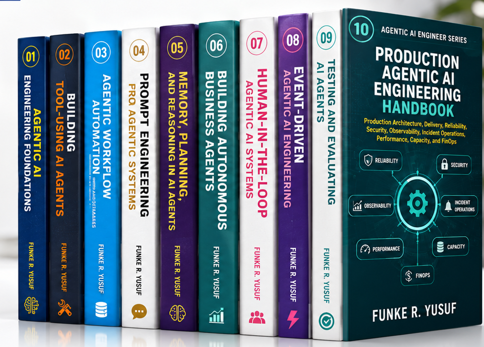

ENTERPRISE AGENT OPERATING SYSTEM
Nexus AOS
Enterprise agent operating system with an Agent Marketplace, Agent Builder and visual Workflow Designer over a governed multi-agent runtime.
Agents · MCP · RAG · Governance · AgentOps
Data & AI Architect working at the intersection of computational mathematics and multi-agent system design. I build reliable AI systems, data platforms and cloud applications.
I bring applied mathematics, data engineering and software design together to solve enterprise problems. My focus is secure, observable AI systems that work from the first requirement through production.
Enterprise platforms, hackathon experiments and industry applications.
Enterprise agent operating system with an Agent Marketplace, Agent Builder and visual Workflow Designer over a governed multi-agent runtime.
Enterprise multi-agent framework covering orchestration, routing, handoffs, tools, memory, models, events, security, evaluation and observability.
IBM Bob 2.0 Hackathon project.
Voice / agentic AI system.
Autonomous commerce agents.
Agent-to-agent payments and financial technology.
Financial document analysis with seven specialized agents, OCR, risk assessment, RAG-powered Q&A, monitoring and quality validation.
Voice and speech intelligence.
Agentic financial application.
Multi-agent procurement intelligence spanning sourcing, bid evaluation, PO execution, contracts and vendor management.
Planning, logistics, inventory and risk agents.
Financial operations, analysis and compliance agents.
Recruitment, workforce and employee-service agents.
Predictive operations for proactive equipment and well monitoring.
Operations, forecasting and asset intelligence agents.
Multi-agent orchestration, RAG, MCP / A2A, memory and evaluation, with security, governance and AgentOps built in.
100 enterprise agent architectures · 110 multi-agent designsMicrosoft Fabric banking platforms, Bronze → Silver → Gold lakehouses, data integration, quality, lineage and dimensional modelling.
Fabric · PySpark · SQL · DatabricksAzure, distributed systems, domain-driven design, microservices and APIs, delivered with Docker, Kubernetes and DevSecOps.
Requirements through deployment and feedbackiTech Delta
RhemaAI Solutions Ltd
Wragby Business Solutions & Technologies Limited
INFINION
Study4as
The Lagoon School
Fountain Computing Ltd
Mathematics (Functional Analysis)
Mathematical Sciences (Mathematics)

A practical guide to designing reliable, governed and scalable multi-agent systems. Explore orchestration, agent communication, memory, security and the operational patterns that bring enterprise AI into production.

A ten-book journey from agent foundations to production engineering. Build your understanding of tools, workflows, memory, autonomous business systems, human oversight and evaluation.
Hands-on architecture labs and lessons in agentic AI, RAG, data engineering and cloud systems.
Available for AI architecture, multi-agent systems, data platforms and cloud engineering engagements.